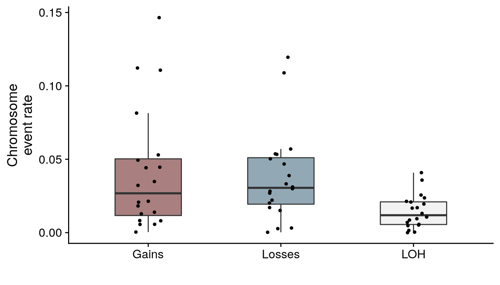
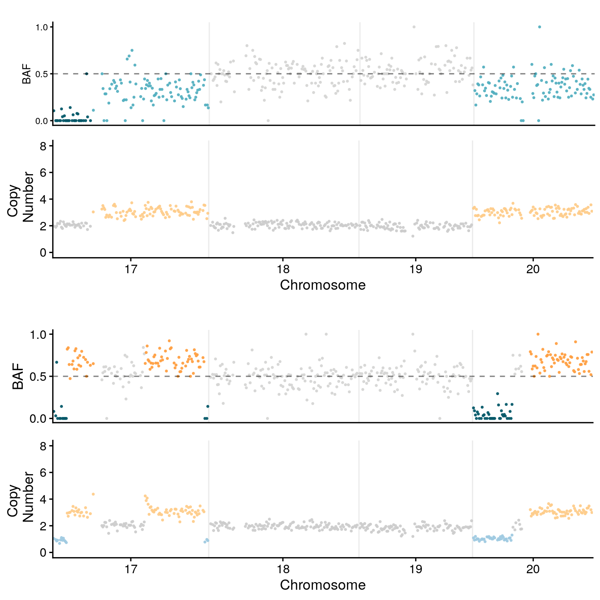
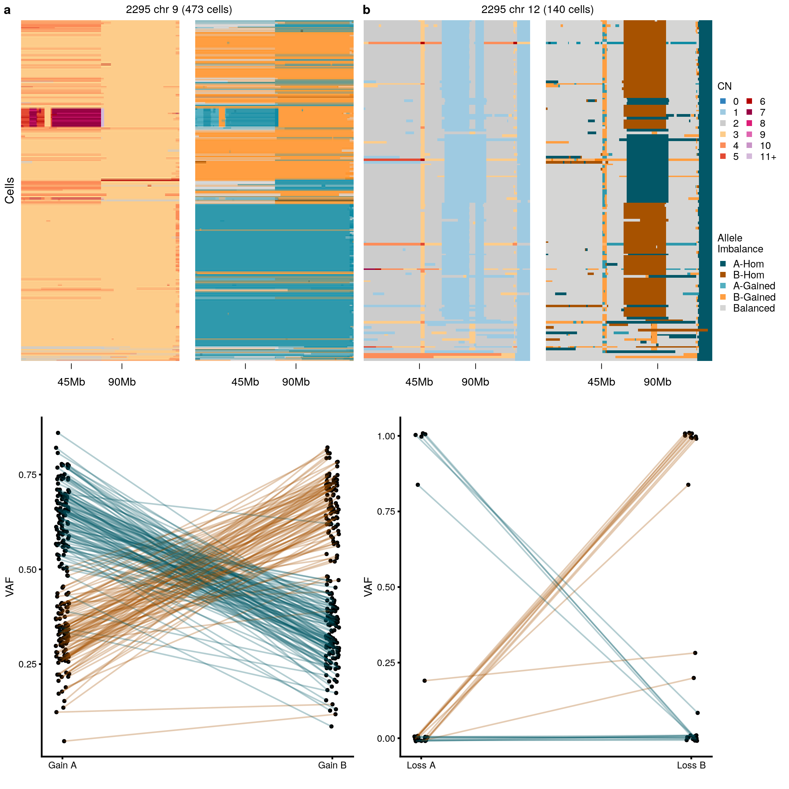

Section 4 Figure 4
4.1 Load data + packages
library(tidyverse)
library(devtools)
library(cowplot)
library(yaml)
library(RColorBrewer)
library(here)
library(yaml)
library(glue)
library(Seurat)
library(data.table)
here::i_am("04-figure4.Rmd")
config <- read_yaml(here("metadata", "config.yaml"))
load_all(config$schnapps)
load_all(config$scgenomutils)
theme_set(theme_cowplot())
hscn <- fread(config$hscn)
ploidy <- fread(config$ploidy)
hscn <- hscn[ploidy, on = "cell_id"]
hscn <- hscn[!is.na(hscn$start)]
metrics <- fread(config$metrics) %>% select(cell_id, coverage_breadth, state_mode,
sample) %>% arrange(desc(coverage_breadth))
bps <- fread(config$breakpoints)4.2 Heatmap
In this figure we take a detailed look at sample SA1188 which is one of our engineered cell lines witth TP53-/- and BRCA2+/-. In particular we’re interested in chromosome 3 where we see evidence of breakage fusion bridge processes.
First of all we’ll cluster the cells using the copy number in chromosome 3q.
source(here("src/bfb_events_util.R"))
# get chr 3
hscn_sa1888 <- hscn[sample == "SA1188" & chr == 3 & start > 9.1e+07]
state4 <- hscn_sa1888[, list(x = sum(state == 4)), by = "cell_id"] %>% arrange(desc(x))
hscn_sa1888 <- hscn_sa1888[cell_id %in% (state4[x == 0] %>% .$cell_id)]
cl <- umap_clustering(hscn_sa1888, field = "copy", umapmetric = "correlation", minPts = 30,
min_dist = 0.1, seed = 123)Now I’ll generate a heatmap of this chromosome.
sa1188chr3 <- makeheatmap(hscn_sa1888, plottitle = "SA1188 chr 3q", showlegend = F,
show_clone_label = T, cl = cl)
plot_grid(sa1188chr3)
Now I’ll generate average copy number profiles and merged SV counts per clone.
hscn_sa1888_clones <- consensuscopynumber(hscn[sample == "SA1188"], cl = cl$clustering) %>%
mutate(cell_id = paste0("Cluster ", cell_id))
highamp <- hscn[sample == "SA1188" & chr == "3"] %>% group_by(cell_id) %>% mutate(maxstate = sum(state >
4)) %>% ungroup() %>% filter(maxstate > 7 & maxstate < 26) %>% group_by(chr,
start, end) %>% consensuscopynumber(.) %>% mutate(cell_id = "Amp")
hscn[sample == "SA1188" & chr == "3"] %>% group_by(cell_id) %>% mutate(maxstate = sum(state >
4)) %>% ungroup() %>% filter(maxstate > 7 & maxstate < 26) %>% pull(cell_id) %>%
unique(.) %>% length()## [1] 19bpsclones <- bps %>% filter(str_detect(sample, "SA1188")) %>% left_join(cl$clustering) %>%
group_by(sample, chromosome_1, position_1, chromosome_2, position_2, type, rearrangement_type,
strand_1, strand_2, clone_id) %>% summarise(read_count = sum(read_count)) %>%
filter(read_count > 0) %>% ungroup() %>% mutate(cell_id = paste0("Cluster ",
clone_id))Much of the variability here can be explained by BFB, below is a diagram of BFB cycles.
bfb <- ggdraw() + draw_image(here("diagrams/bfb.png"), scale = 1) + theme(plot.margin = margin(0,
-10, 0, -10))
bfb
To look into this in a bit more detail I’ll plot the copy number profiles with SV for some of these clusters.
xpos <- 0.3
ypos <- 0.27
dcell2 <- getplothomolog(hscn_sa1888_clones, bpsclones, clone = "Cluster C", curvature = curve,
adj = 0, addlabel = TRUE, svlims = c(0, 2), ylimlab = c(6, 5, 4), xlimlab = c(NA,
250))## [1] "Cluster C"
## [1] 51845(dcell2_im <- ggdraw() + draw_plot(dcell2) + draw_image(here("diagrams/bfb_loss_small.png"),
width = 0.2, height = 0.2, x = xpos, y = ypos))
dcell1 <- getplothomolog(hscn_sa1888_clones, bpsclones, clone = "Cluster F", adj = 0,
addlabel = FALSE, svlims = c(0, 2), ylimlab = c(6, 5, 4), xlimlab = c(NA, 250))## [1] "Cluster F"
## [1] 51845(dcell1_im <- ggdraw() + draw_plot(dcell1) + draw_image(here("diagrams/bfb_gain1.png"),
width = 0.2, height = 0.2, x = xpos, y = ypos + 0.2))
## [1] "Cluster J"
## [1] 51845(dcell2a1_im <- ggdraw() + draw_plot(dcell2a1) + draw_image(here("diagrams/bfb_gain2.png"),
width = 0.2, height = 0.2, x = xpos, y = ypos + 0.2))
dcell2a2 <- getplothomolog(hscn_sa1888_clones, bpsclones, clone = "Cluster A", curvature = curve,
svlims = c(0, 2))## [1] "Cluster A"
## [1] 51845(dcell2a2_im <- ggdraw() + draw_plot(dcell2a2) + draw_image(here("diagrams/bfb_gain2.png"),
width = 0.2, height = 0.2, x = xpos, y = ypos + 0.2))dcellextraloss <- getplothomolog(hscn_sa1888_clones, bpsclones, clone = "Cluster D",
curvature = curve, svlims = c(0, 2))## [1] "Cluster D"
## [1] 51845(dcellextraloss_im <- ggdraw() + draw_plot(dcellextraloss) + draw_image(here("diagrams/bfb_loss_large.png"),
width = 0.2, height = 0.2, x = xpos, y = ypos + 0.2))
dcellhigh <- getplothomolog(highamp, bpsclones, clone = "Amp", curvature = curve,
title = "PIK3CA Amplification", svlims = c(0, 2))## [1] "Amp"
## [1] 308(dcellhigh_im <- ggdraw() + draw_plot(dcellhigh) + draw_image(here("diagrams/bfb_gain3.png"),
width = 0.25, height = 0.15, x = xpos, y = ypos + 0.2))Now we’ll merge all these plots together to create the final figure, but first we need to grab the legends.
ASlegend <- get_legend(plotCNprofileBAF(hscn, homolog = F, returnlist = T)$BAF +
theme_cowplot(font_size = 11, rel_small = 1) + guides(col = guide_legend("Allele\nImbalance",
ncol = 1, override.aes = list(alpha = 1, size = 2.5, shape = 15))))
cnlegend <- get_legend(plotCNprofile(hscn) + theme_cowplot(font_size = 11, rel_small = 1) +
guides(col = guide_legend("CN", ncol = 2, override.aes = list(alpha = 1, size = 2.5,
shape = 15))))
mylegends <- plot_grid(NULL, cnlegend, NULL, ASlegend, NULL, ncol = 1, rel_heights = c(0.2,
1, 0.3, 1, 0.2))
leg <- getplothomolog(hscn_sa1888_clones, bpsclones, curvature = curve, retleg = T,
ncol_legend = 1, svlims = c(0, 2))## NULL
## [1] 51845top <- cowplot::plot_grid(bfb, sa1188chr3, NULL, mylegends, ncol = 4, labels = c("a",
"b"), rel_widths = c(1, 1.3, 0.05, 0.2))
middle <- cowplot::plot_grid(dcell2_im, dcell1_im, dcell2a1_im, dcell2a2_im, dcellextraloss_im,
dcellhigh_im, NULL, leg, ncol = 8, labels = c("c", "d", "e", "f", "g", "h"),
rel_widths = c(1, 1, 1, 1, 1, 1, 0.1, 0.8))
gall <- cowplot::plot_grid(top, middle, ncol = 1, labels = c("", ""), rel_heights = c(1.7,
1.25))
gall
Figure 4.1: Figure 4
4.3 Phylogenetically ordered heatmap
We can also compare the ordering to a phylogenetically orderd heatmap
library(ape)
source(here("src/tree_utils.R"))
tree <- get_and_format_tree("SA1188")
tree <- keep.tip(tree, cl$clustering$cell_id)
hm <- plotHeatmap(hscn[sample == "SA1188"], tree = tree, clusters = cl$clustering,
show_library_label = F)
hmchr <- grid::grid.grabExpr(ComplexHeatmap::draw(hm, ht_gap = unit(0.6, "cm"), column_title = "",
column_title_gp = gpar(fontsize = 12), heatmap_legend_side = "bottom", annotation_legend_side = "bottom",
show_heatmap_legend = TRUE), width = 40, height = 13/3)
plot_grid(hmchr)
4.4 Other htert examples
4.4.1 MYC SA906a
myc <- gene_copynumber(hscn[sample == "SA906a"], "MYC") %>% filter(copy > 7)
cells <- hscn[cell_id %in% myc$cell_id] %>% pull(cell_id) %>% unique(.)
hscn_clones <- hscn[cell_id %in% cells] %>% group_by(chr, start, end) %>% summarise(state = schnapps:::Mode(state),
state_min = schnapps:::Mode(state_min), BAF = median(BAF), state_phase = schnapps:::Mode(state_phase),
state_AS_phased = schnapps:::Mode(state_phase), state_BAF = schnapps:::Mode(state_BAF),
copy = median(copy)) %>% ungroup() %>% mutate(cell_id = paste0("SA906a (", length(cells),
" cells)")) %>% filter(chr == "8")
bpsclones <- bps %>% filter(cell_id %in% cells) %>% group_by(sample, chromosome_1,
position_1, chromosome_2, position_2, type, rearrangement_type) %>% summarise(read_count = sum(read_count)) %>%
filter(read_count > 0) %>% ungroup() %>% mutate(cell_id = paste0("SA906a (",
length(cells), " cells)")) %>% filter(chromosome_1 == "8")
hm1 <- makeheatmap(hscn[sample == "SA906a" & chr == 8 & ploidy == 2], plottitle = "SA906a chr8",
showlegend = F, show_clone_label = T, clustfield = "BAF")
dcell_myc <- getplothomolog(hscn_clones, bpsclones, clone = paste0("SA906a (", length(cells),
" cells)"), genes = "MYC", mybreaks = c(0, 2, 5, 10, 20), svlims = c(0, 2), addlabel = TRUE,
chrfilt = "8", y_axis_trans = "squashy", maxCN = 24, addlegend = F, ncol_legend = 4,
alphaval = 0.5, title = "Cluster C")## [1] "SA906a (267 cells)"
## [1] 224
4.4.2 SA906b chr20
cellschr20 <- hscn[sample == "SA906b" & chr == "20" & ploidy == 2] %>% .[, list(x = sum(state >
4)/.N), by = "cell_id"] %>% arrange(desc(x)) %>% filter(x > 0) %>% pull(cell_id)
hscn_clones <- hscn[cell_id %in% cellschr20] %>% group_by(chr, start, end) %>% summarise(state = schnapps:::Mode(state),
state_min = schnapps:::Mode(state_min), BAF = median(BAF), state_phase = schnapps:::Mode(state_phase),
state_AS_phased = schnapps:::Mode(state_phase), state_BAF = schnapps:::Mode(state_BAF),
copy = median(copy)) %>% ungroup() %>% mutate(cell_id = paste0("SA906b (", length(cellschr20),
" cells)")) %>% filter(chr == "20")
bpsclones <- bps %>% filter(cell_id %in% cellschr20) %>% group_by(sample, chromosome_1,
position_1, chromosome_2, position_2, type, rearrangement_type) %>% summarise(read_count = sum(read_count)) %>%
filter(read_count > 0) %>% ungroup() %>% mutate(cell_id = paste0("SA906b (",
length(cellschr20), " cells)")) %>% filter(chromosome_1 == "20")
hm2 <- makeheatmap(hscn[sample == "SA906b" & chr == 20 & ploidy == 2], plottitle = "SA906b chr20",
showlegend = F, show_clone_label = T, clustfield = "BAF", minPts = 100)
dcell_chr20 <- getplothomolog(hscn_clones, bpsclones, clone = paste0("SA906b (",
length(cellschr20), " cells)"), genes = "MYC", mybreaks = c(0, 2, 5, 10, 20),
svlims = c(0, 2), addlabel = TRUE, chrfilt = "20", y_axis_trans = "squashy",
maxCN = 24, addlegend = F, ncol_legend = 4, alphaval = 0.5, title = "Cluster C")## [1] "SA906b (699 cells)"
## [1] 103
4.4.3 SA906b chr22
cellschr22 <- hscn[sample == "SA906b" & chr == "22" & ploidy == 2] %>% .[, list(x = sum(state >
2)/.N), by = "cell_id"] %>% arrange(desc(x)) %>% filter(x > 0) %>% pull(cell_id)
hscn_clones <- hscn[cell_id %in% cellschr22] %>% group_by(chr, start, end) %>% summarise(state = schnapps:::Mode(state),
state_min = schnapps:::Mode(state_min), BAF = median(BAF), state_phase = schnapps:::Mode(state_phase),
state_AS_phased = schnapps:::Mode(state_phase), state_BAF = schnapps:::Mode(state_BAF),
copy = median(copy)) %>% ungroup() %>% mutate(cell_id = paste0("SA906b (", length(cellschr22),
" cells)")) %>% filter(chr == "22")
bpsclones <- bps %>% filter(cell_id %in% cellschr22) %>% group_by(sample, chromosome_1,
position_1, chromosome_2, position_2, type, rearrangement_type) %>% summarise(read_count = sum(read_count)) %>%
filter(read_count > 0) %>% ungroup() %>% mutate(cell_id = paste0("SA906b (",
length(cellschr22), " cells)")) %>% filter(chromosome_1 == "22")
cells <- sample(unique(hscn[sample == "SA906b" & chr == 22 & ploidy == 2]$cell_id),
1000)
# cl <- umap_clustering(hscn[sample == 'SA906b' & chr == 22 & ploidy == 2], field
# = 'copy', minPts = 200) hm3 <- makeheatmap(hscn[sample == 'SA906b' & chr == 22
# & ploidy == 2], plottitle = 'SA906b chr22', showlegend = F, show_clone_label =
# T, cl = cl)
cl <- umap_clustering(hscn[cell_id %in% cells][chr == "22"], field = "BAF", minPts = 50)
hm3 <- makeheatmap(hscn[cell_id %in% cells][chr == "22"], plottitle = "SA906b chr22",
showlegend = F, show_clone_label = T, cl = cl)
dcell_chr22 <- getplothomolog(hscn_clones, bpsclones, clone = paste0("SA906b (",
length(cellschr22), " cells)"), genes = "MYC", mybreaks = c(0, 2, 5, 10, 20),
svlims = c(0, 2), addlabel = TRUE, chrfilt = "22", y_axis_trans = "squashy",
maxCN = 24, addlegend = F, ncol_legend = 4, alphaval = 0.5, title = "Cluster B")## [1] "SA906b (187 cells)"
## [1] 51
4.4.4 Legends
ASlegend <- get_legend(plotCNprofileBAF(hscn, homolog = F, returnlist = T)$BAF +
theme_cowplot(font_size = 11, rel_small = 1) + guides(col = guide_legend("Allele Imbalance",
ncol = 1, override.aes = list(alpha = 1, size = 2.5, shape = 15))))
homlegend <- get_legend(plotCNprofileBAF(hscn, homolog = T) + theme_cowplot(font_size = 11,
rel_small = 1) + guides(col = guide_legend("Allele", nrow = 3, override.aes = list(alpha = 1,
size = 2.5, shape = 15))))
cnlegend <- get_legend(plotCNprofile(hscn) + theme_cowplot(font_size = 11, rel_small = 1) +
guides(col = guide_legend("CN", nrow = 5, override.aes = list(alpha = 1, size = 2.5,
shape = 15))))
bpsum <- bps %>% filter(sample == "SA1049") %>% group_by(sample, chromosome_1, position_1,
chromosome_2, position_2, type, rearrangement_type) %>% summarise(read_count = sum(read_count)) %>%
filter(read_count > 3)
svlegend <- get_legend(plotSV(bpsum, legend.position = "right", font_size = 11))
mylegends <- plot_grid(NULL, cnlegend, ASlegend, NULL, ncol = 1, rel_heights = c(0.2,
1, 1, 0.2))
mylegends2 <- plot_grid(NULL, svlegend, homlegend, NULL, ncol = 1, rel_heights = c(0.2,
1, 1, 0.2))4.4.5 Merged figure
gall <- cowplot::plot_grid(cowplot::plot_grid(hm1, hm2, hm3, mylegends, labels = c("a",
"b", "c"), ncol = 4, rel_widths = c(1, 1, 1, 0.5)), cowplot::plot_grid(dcell_myc,
dcell_chr20, dcell_chr22, mylegends2, ncol = 4, rel_widths = c(1, 1, 1, 0.5)),
NULL, ncol = 1, rel_heights = c(1, 0.75, 0.05))
gallFigure 4.2: hTERT examples